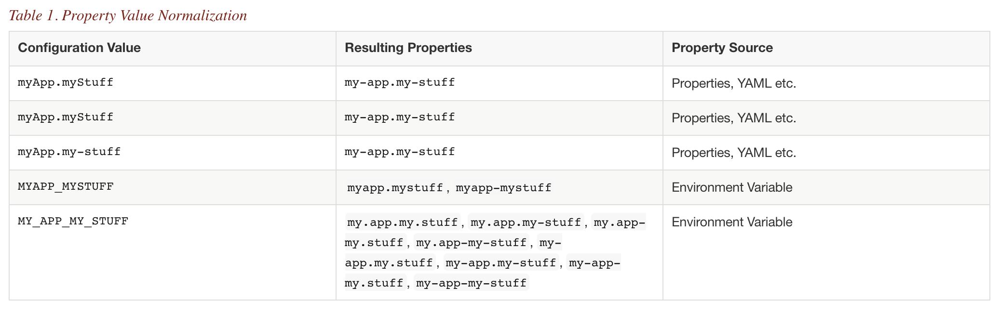

LE MONOLITHE
Properties
Variables d'environnement
Inclusion automatique dans les properties
 Consommateur si beaucoup de variables avec de nombreux séparateursDésactiver la conversion des variables
Scopes
Contrôles avancés
Implémentation minimaliste
Gestion des offsets
compile "io.micronaut.configuration:micronaut-redis-lettuce"
redis:
servers:
products:
uri: redis://${host1}
prices:
uri: redis://${host2}
@Inject @Named("prices")
StatefulRedisConnection connection;
Pas de job cron nécessaire
Annotations pour créer des tâches périodiques
Déclaratif ou programmatique
@Scheduled(fixedDelay="1m")
void doSomethingGreat(){
}
@Scheduled(fixedDelay="1m", initialDelay="10s")
void doSomethingGreat(){
}
@Scheduled(cron="0 0 2 * * *")
void doSomethingGreat(){
}
@Inject
@Named(TaskExecutors.SCHEDULED)
TaskScheduler taskScheduler;
taskScheduler.schedule(delay, runnableTask);
taskScheduler.scheduleAtFixedRate(initialDelay, periodicity, runnableTask);
taskScheduler.scheduleWithFixedDelay(initialDelay, delay, runnableTask);
Attention au scope et aux états